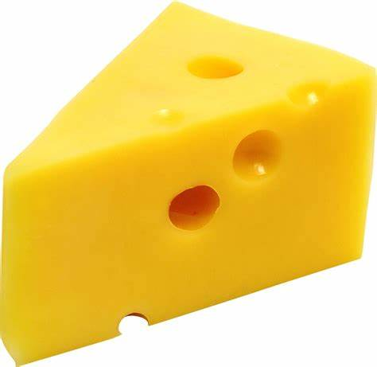

{Intro} Here we go, so: {Refrain} Cheese (x5) Butter: spread it on the bread Bollocks Cheese (x7) Brown bread! Lucy doesn't like cheese See you'd have starved in the 70's Musical interlude {Verse} Lurpak spreadable butter Line it up, and it's on Good man. Cheese Other graters, are available Rotary graters, this is one of those One of them was cheddar That's this one here Cut from a true wheel Red leicester The third one, in a small blue pot That smelled of sick! These are cheese Not shade grown Not line caught Not oak aged Not free trade Just f**king cheese {Refrain} Cheese (x5) Butter: spread it on the bread Bollocks {Outro} Cheese (x8)
Cheese is a versatile and ancient food, enjoyed for thousands of years across the globe. Made primarily from the curdled milk of cows, goats, sheep, or other mammals, its creation relies on a delicate balance of science and art. The process begins with coagulating milk using rennet or an acid, separating it into curds and whey. The curds are then shaped, salted, and aged to develop their unique textures and flavors. From creamy Brie to sharp Cheddar, cheese offers a spectrum of tastes and styles, catering to virtually every palate.
Not only is cheese a culinary delight, but it is also rich in nutrients like calcium, protein, and vitamins A and B12. Its variety in taste and application makes it a staple in global cuisines, from the gooey mozzarella on pizza to the tangy blue cheese in a salad. Beyond its role in cooking, cheese is celebrated culturally and economically, with regions such as France and Italy producing iconic varieties that reflect their heritage. This beloved dairy product truly bridges the gap between comfort food and gourmet indulgence.